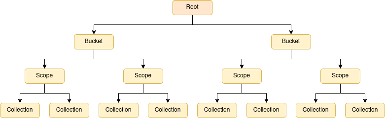
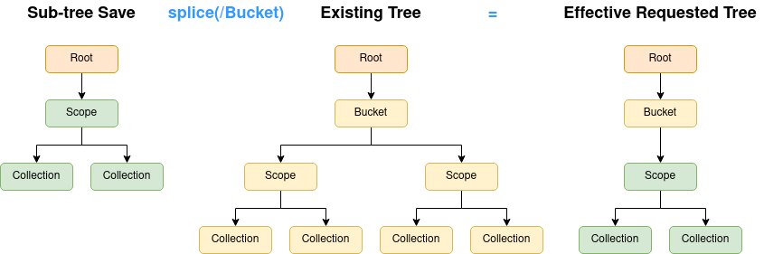
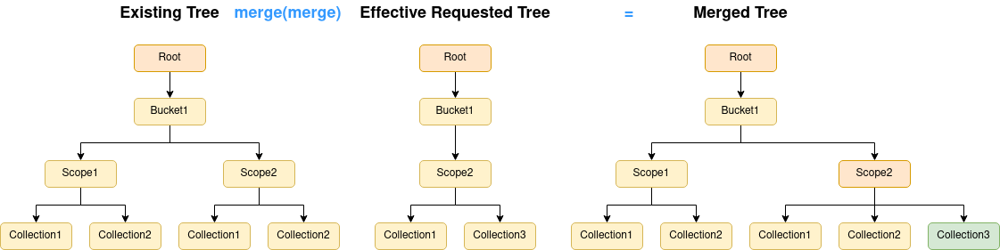
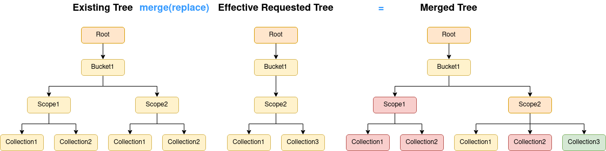

Data Topology Save, Restore and Synchronization
The Operator and tooling provides features to aid with development and management of clusters. This details what can be done, and when it should be used.
Introduction to Save, Restore and Synchronization
The Operator provides a rich set of Kubernetes-native primitives for configuration and management of the Couchbase data topology. Typically you would use a configuration and life-cycle manager to handle these resource for you e.g. Helm, Red Hat Operator Lifecycle Manager. These provide enterprise features such as:
-
Change control
-
Peer review
-
Auditing
-
Disaster recovery
On some occasions, such as development environments, introducing a complex workflow may prove counter-productive, and negatively impact time to market.
This is where the save, restore and synchronization features come in to play.
|
Save, restore and synchronization are — ostensibly — manual operations outside of the scope of any life-cycle manager used to deploy and manage a Couchbase cluster. To a lifecycle manager, any modifications to managed resources will look like external interference that needs to be reconciled back into the requested state. A result of accidental reversion is deletion of buckets, scopes, collection, data and indexes. It is your responsibility to ensure either:
|
Data Topology Save and Restore
Data topology save and restore does what it sounds like: allows data topology (buckets, scopes and collections), to be saved as a file, then restored to a Couchbase cluster.
Data topology is read directly from the Couchbase cluster being saved, and therefore is not constrained by resources whether managed or not — what’s live on the cluster is what’s considered.
When data topology is restored to the cluster, two things happen, resources representing the data topology are atomically applied to the cluster, and management of those resources is enabled. After this point, any manual modifications to the data topology will be reverted by the Operator as per usual.
There are two use cases that save and restore fulfills:
-
Local save and restore — from and to the same cluster — allows manually created resources to be converted into Kubernetes resources and managed.
-
Remote restoration allows a save file to be applied to another cluster, allowing you to define your database schema one time, then replicate it across your enterprise.
Using Save and Restore
Throughout this example, the Couchbase cluster being referred to is called my-cluster.
You will need to change this to your specific cluster name.
Creating a Save File
Consider the following:
$ cao save --couchbase-cluster my-cluster --filename my-cluster-save.yamlThe cao tool will connect to the named cluster defined by the --couchbase-cluster flag.
The command will read all buckets from Couchbase Server, then recursively any scopes and collections contained within them.
The command will then convert all discovered resources into native Kubernetes resource types, preserving all configuration and linkage information.
Finally the save file is stored as defined by the --filename flag.
The command above results in a full-tree save, i.e. everything on the system.
It is also possible to do a sub-tree save, that limits the scope to all resources contained within a single bucket, or scope. For example, a sub-tree save of a bucket will contain all scopes and collections within it, and a sub-tree save of a scope will contain only the collections within that scope.
|
Due to the design of scopes and collections for Kubernetes, a default collection can only be preserved by also including its parent scope. When taking a sub-tree save of a scope, the default collection will be discarded. |
For more information on the cao save command, and all supported flags, read the reference documentation.
Restoring a Save File
Restoring a save file to a cluster is equally easy as saving:
$ cao restore --couchbase-cluster my-cluster --filename my-cluster-save.yaml
Data topology solution:
/
└── pail (bucket) create
├── _default (scope) create
├── periscope (scope) create
└── telescope (scope) create
└── copernicus (collection) create
WARNING! resources marked as delete may result in data loss.
OK to proceed? (y/N) y
couchbasebuckets/bucket-0bb85962-2f40-4492-a6dc-53c6aec37c80 created
couchbasescopes/scope-38413733-3965-4557-8520-815cbd710a30 created
couchbasescopes/scope-ef185678-6625-4378-8ed0-4d880446790f created
couchbasecollections/collection-cbaad53f-2a4e-4066-9d55-2798323417d9 created
couchbasecluster/my-cluster updatedThis demonstrates a number of features, and benefits of using this tooling:
-
Feedback is given to the user so you can review changes before applying them.
-
You can back out of a change if it’s not as desired.
-
Each resource listed has an action that will be performed to conform the cluster to the save file:
-
create: the resource is new and will be created. -
update: the resource is different, e.g. bucket memory quota has changed, and will be updated. -
delete: the resource is no longer required and will be deleted. -
retain: the resource is unchanged.
-
By default, this tool will never delete any resource, this is a safe mode of operation that ensures no data will be accidentally deleted. You can change the merge strategy to delete resources that appear in the cluster but not in the save file. This mode of operation is for enforcement of schema, and ensures that unneeded data will be cleaned up.
For more information on the cao restore command, and all supported flags, read the reference documentation.
Read on for a more technical breakdown of how this command works, or skip to the Data Topology Synchronization section for more options migrating from an unmanaged data topology to a managed one.
|
When performing a restore, there are a number of cluster conditions that must be met:
The use of label selectors is two-fold. First, this is a strong indicator that other clusters in the same namespace will not be affected, it is your responsibility to ensure selector uniqueness. Second, this allows atomic updates of the entire topology, and rollback in the event of an error. |
Restore Internals
This section gives a technical breakdown of how a save file is restored to a Couchbase cluster, and how various options affect the outcome.
Data Model
You should be familiar with the concepts of buckets, scopes and collections. If we took the naive approach of modeling this as is, then we’d end up with a forest of trees — buckets contain scopes and collections, there are multiple buckets. This is an inefficient model for our purposes, so instead we introduce a root node, then our forest becomes a single tree.

When we first start processing the save file, two things happen.
First, the save data is processed and it is organized into a tree, the requested tree. This may take the form of a full-tree — where buckets are children of the root node — or a sub-tree — where scopes or collections are children of the root node.
Second, the Couchbase cluster is polled for its current data topology, essentially the same process as a save, which is also organized into a full-tree, the current tree.
Sub-tree Splicing
When merging trees together in the next phase, it’s far easier to consider full-trees, where at each level of the tree, the resource types are the same. When provided with a full-tree, this can just be left as-is.
Sub-trees however need to be "attached" to some point in the hierarchy, yielding an effective requested tree.

In the above example, a sub-tree save of scopes and collections is spliced into the existing tree to yield the effective requested tree.
All children of the attach point are removed, and replaced with the contents of the sub-tree save.
The point at where the sub-tree is attached is under the direction of the --path command flag.
When a sub-tree save is loaded, the command will ensure a path is provided, and that the path defines an element at the correct level.
Merging
Merging is the most important step in the process. It takes the current tree and merges it with the effective requested tree to yield a merged tree. The end product is a single tree that contains all nodes that exist in both input trees, but with an action associated with it.
The default operation is to merge trees so that nothing is deleted:

Here we can see that even though Scope1 in Bucket1 is not in the requested tree, it will be preserved, so no data is lost.
Likewise, Collection2 in Scope2 in Bucket1.
Collection3 in Scope2 in Bucket1 is requested, but does not exist, so that is flagged for creation (green).
Scope2 in Bucket1 may have changed in some way, so that is flagged for an update (orange).
The other option when merging is to use the replace strategy (the --strategy=replace command flag):

The difference between this strategy and the default merge strategy is that things that currently exist, but have not been requested will be marked for deletion (red).
Whatever merge strategy was selected, the merged tree output from this stage is what is presented to the user on the command line for user verification.
|
You may have noticed that as sub-tree saves are spliced into the current tree, therefore anything outside of the scope of the save data will always be preserved, regardless of the merge strategy. |
Compaction
Once the merge tree is generated, and the user has given the go ahead, it is processed into a compacted tree. This stage does a traversal of the merged tree, and compacts retained, created and updated resources into groups, where it can. For example, collections can be combined into collection groups where their specifications match. Likewise, scopes can be combined into scope groups if they contain the same set of child collections.
Compaction can dramatically reduce the number of resources that are required to fulfill a data topology, leading to fewer Kubernetes API calls, faster performance, and simpler resource management.
Pivoting and Cleanup
The final step is to commit the data topology and make it live. This is a simple case of generating all resources in the compacted tree, giving each resource a unique name, linking them together and creating them in Kubernetes. The Couchbase cluster is then updated to manage buckets, and select those that we have just created (with a label selector).
This pivot from an existing tree, to a new one, is atomic, therefore if anything goes wrong during this process, the operation can be rolled back.
Cleanup occurs after the new data topology is live.
The restore command interrogated the Couchbase cluster before doing the pivot to determine any Kubernetes resources linked to it (e.g. CouchbaseBucket, CouchbaseScope, etc.)
These are now deleted to provide automated garbage collection.
|
Because multiple Couchbase clusters can run in the same namespace, there is a danger that any resource created, or deleted, by a restore may be erroneously picked up by another cluster. It is your responsibility to ensure any other clusters in this namespace have a unique bucket/scope/collection label selectors that will not be affected by this synchronization operation. |
Data Topology Synchronization
Unlike Data Topology Save and Restore, synchronization is a fully online process.
Synchronization allows data topology to be manually created by the user, either via the Couchbase user interface, or other external management tools. This provides rapid and agile development of your database schema.
Once completed, the Operator can be told to synchronize data topology. This will poll Couchbase for the full data-topology — including buckets, scopes and collections — then mirror this configuration as Kubernetes-native custom resources. The user can then poll for completion before finally setting the Couchbase cluster to manage buckets. After this point, any manual modifications to the data topology will be reverted by the Operator as per usual.
|
As this feature is completely controlled by the Operator, there are a number of things to be aware of:
|
Using Data Topology Synchronization
Throughout this example, the Couchbase cluster being referred to is called my-cluster.
You will need to change this to your specific cluster name.
Preparation
The first thing that needs to be done is to clear any old resources out of the way.
If you do not have any existing CouchbaseBucket, CouchbaseScope, etc. resources, and buckets are not managed (couchbaseclusters.spec.buckets.managed is false, or undefined), then skip to the next section.
First, you need to disable bucket management, so existing configuration is not deleted once backing resources are removed.
$ kubectl patch couchbasecluster my-cluster --type=merge -p '{"spec":{"buckets":{"managed":false}}}'Next, remove any resources that may conflict with those the Operator will generate. An example of manually clearing out resources could look like:
$ for i in couchbasebuckets \
couchbaseephemeralbuckets \
couchbasememcachedbuckets \
couchbasescopes \
couchbasescopegroups \
couchbasecollections \
couchbasecollectiongroups
do
kubectl delete $i --all
doneThis command deletes all resources in the namespace that will be affected by a synchronization operation.
You can replace --all with a label, or field, selector if you wish to be more selective, especially in the case where multiple Couchbase clusters are running in the same namespace.
|
Data topology resources can be shared between clusters. If they are shared, then deletion may affect another — unrelated — cluster and result in data loss. For this reason we recommend only ever deploying one Couchbase cluster per namespace. |
Synchronizing
Once you have manually updated the data topology to how you want it, we can begin synchronizing it so it can be managed.
|
Because multiple Couchbase clusters can run in the same namespace, there is a danger that any resource created by synchronization may be erroneously picked up by another cluster. For this reason, the Operator enforces the use of a label selector to generate and select buckets for inclusion on the cluster to be synchronized. It is your responsibility to ensure any other clusters in this namespace have a unique bucket label selector that will not be affected by this synchronization operation. |
Synchronization is triggered by first setting a label selector, then triggering the operation:
$ kubectl patch couchbasecluster my-cluster --type merge -p '{"spec":{"buckets":{"selector":{"matchLabels":{"foo":"bar"}}}}}'
$ kubectl patch couchbasecluster my-cluster --type merge -p '{"spec":{"buckets":{"synchronize":true}}}'The synchronization operation proceeds as follows:
-
Couchbase server is polled for all buckets, scopes and collections.
-
Kubernetes resources are generated for those Couchbase resources.
-
Buckets are labeled as defined by the provided label selector, therefore they should be considered by this cluster only.
-
-
Kubernetes resources are created and persisted.
-
The Operator reports the status in the cluster conditions.
To check for completion status, you can wait until the condition is reported:
$ kubectl wait --for=condition=Synchronized couchbasecluster/my-clusterThen check whether or not the synchronization succeeded:
$ kubectl describe couchbasecluster/my-cluster | grep Synchronized -B 5
Last Transition Time: 2022-01-14T10:33:25Z
Last Update Time: 2022-01-14T10:33:25Z
Message: Data topology synchronized and ready to be managed
Reason: SynchronizationComplete
Status: True
Type: Synchronized|
You must ensure synchronization has completed successfully before switching to managed mode. Failure to do so may result in backing resources not being created, and data loss. |
|
Once synchronization has been triggered, you should not make any more manual adjustments to the data topology. Doing so may result in a conflict between what is expected and what has already been generated and committed. If you do encounter a conflict, then restart the process from the Preparation stage to remove the conflicting resource. |
|
Unlike save and restore, synchronization does not optimize the data topology Kubernetes resources. In a worst case scenario, where 1000’s of scopes and collections are in use, then you can expect synchronization to take several minutes due to the throttling of requests to the Kubernetes API to ensure fair use. |
Managing Synchronized Resources
Once you have confirmed synchronization has completed successfully, you can switch the cluster’s bucket management on:
$ kubectl patch couchbasecluster my-cluster --type=merge -p '{"spec":{"buckets":{"synchronize":false,"managed":true}}}'From this point onward, any managed resources that are deleted or modified manually will be recovered, and any additional resources that are added will be deleted, as per the usual operation of the Operator.